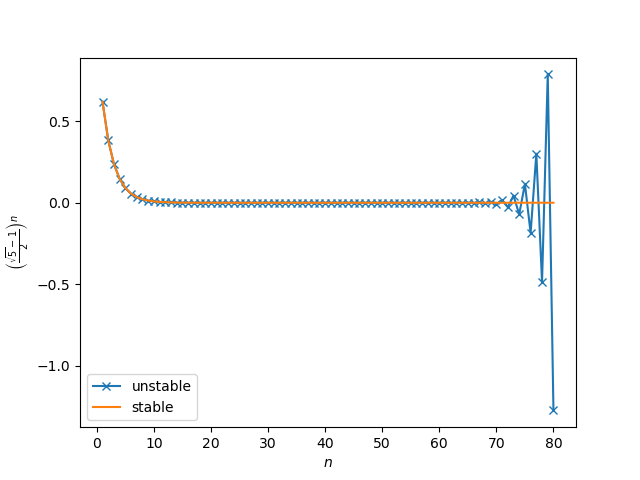
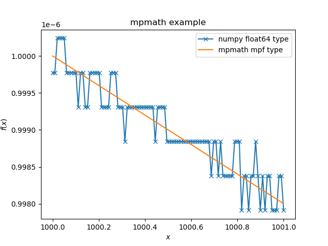

Round-off error
Round-off error 的原因是数值计算的过程中, 机器的精度是有限的. wikipedia: Round-off error
Unstable method
计算 Goledn Mean
$$\begin{align} \phi = \frac{\sqrt{5} - 1}{2} \approx 0.61803398 \end{align}$$的 $n$ 次幂 $\phi^n$ . 可以证明它满足递推关系
$$\begin{align} \phi^{n + 1} = \phi^{n - 1} - \phi^n \end{align}$$使用此递推关系, 可以由原来的乘法变成减法, 会节约计算资源. 但是此递推关系还有另一 个解
$$\begin{align} - \frac{1}{2}(\sqrt{5} + 1) \end{align}$$因为它的绝对值是大于 $1$ 的. 所以混入任何 round-off error 都会指数发散. 因此这个 递推算法是一个 unstable method.
import numpy as np
import matplotlib.pyplot as plt
def unstable(n: int) -> float:
p = []
p.append(1)
p.append((np.sqrt(5) - 1) / 2)
for i in range(n-1):
i += 1
p.append(p[i-1] - p[i])
return p[-1]
def stable(n: int) -> float:
return ((np.sqrt(5) - 1) / 2)**n
n = 80
x = []
y_unstable = []
y_stable = []
for i in range(n):
i += 1
x.append(i)
y_unstable.append(unstable(i))
y_stable.append(stable(i))
plt.plot(x, y_unstable, '-x', label="unstable")
plt.plot(x, y_stable, label="stable")
plt.xlabel(r'$n$')
plt.ylabel(r'$\left(\frac{\sqrt{5} - 1}{2}\right)^n$')
plt.legend()
plt.savefig('unstable_method.png')2021-05-15-coding-unstable_method/unstable_method.py

解决方法
解决方法之一是使用更高精度的数值类型. 虽然此法在效率上的代价是巨大的. Mathematica 中设置 WorkingPrecision 即为此方法.
在 python, mpmath 包提供了类似的处理方法
import numpy as np
from mpmath import mp
import matplotlib.pyplot as plt
mp.dps = 20
print(mp)
def unstable(n: int) -> float:
p = []
p.append(1)
p.append((mp.sqrt(5) - 1) / 2)
for i in range(n-1):
i += 1
p.append(p[i-1] - p[i])
return p[-1]
def stable(n: int) -> float:
return ((np.sqrt(5) - 1) / 2)**n
n = 80
x = []
y_unstable = []
y_stable = []
for i in range(n):
i += 1
x.append(i)
y_unstable.append(unstable(i))
y_stable.append(stable(i))
plt.plot(x, y_unstable, '-x', label="unstable method with mpmath")
plt.plot(x, y_stable, label="stable")
plt.xlabel(r'$n$')
plt.ylabel(r'$\left(\frac{\sqrt{5} - 1}{2}\right)^n$')
plt.legend()
plt.savefig('unstable_method_with_mpmath.png')
>>>
Mpmath settings:
mp.prec = 70 [default: 53]
mp.dps = 20 [default: 15]
mp.trap_complex = False [default: False]
file:2021-05-15-coding-unstable_method/unstable_method_with_mpmath.py

可以看出, 将求根的计算精度由 numpy.float64 (53个二进制位表示一个浮点数) 提高到
70 个二进制位表示一个浮点数, 在 $n\le 80$ 的范围内, round-off error 被压住了.
[[eww:https://mpmath.org/doc/1.2.0/basics.html][二进制位与十进制数有效数字个数的关系大致是 prec = 3.33*dps]]
另一种出现 round-off error 的情况
$$\begin{align} \int_0^{\infty } \mathrm{d}k\cdot \left[\sqrt{5 k^4+4 \sqrt{k^4+1} k^2+4}-3 k^2\right] \approx 2.4720995697351625579 \end{align}$$从解析上可以得到, 被积函数在 $k\to \infty$ 时的行为是 $\sim 1/k^2$ . 根号中的第一项和第二 项 $-3k^2$ 在 $k\to \infty$ 时各自是发散的, 但是相加之后是收敛的.
但是数值计算上, 当 $k$ 很大时, 在保留的有效数字个数有限的情况下, 相加得到的结果 可能在有效数字之外了, 因此相加的结果是 round-off error. 反映在结果上就是本来应该 $\sim 1/k^2\to 0$ 的, 却出现抖动.
这时也可以用 mpmath 提高精度.
import numpy as np
import matplotlib.pyplot as plt
from mpmath import mp
from scipy.integrate import quad
mp.dps = 18
print(mp)
def func(k):
res = np.sqrt(k**4 + 1)
res *= 4*k**2
res += 5*k**4 + 4
res = np.sqrt(res)
res += -3*k**2
return res
def mpmath_func(k_float):
k_mpmath = mp.mpmathify(k_float)
return func(k_mpmath)
ks = np.linspace(1000, 1001, 100)
fs = func(ks)
mp_math_fs = [mpmath_func(k) for k in ks]
plt.plot(ks, fs, '-x', label="numpy float64 type")
plt.plot(ks, mp_math_fs, label="mpmath mpf type")
plt.title('mpmath example')
plt.xlabel(r'$x$')
plt.ylabel(r'$f(x)$')
plt.legend()
plt.savefig('mpmath_example.png')
print('result of numpy float64 type:', quad(mpmath_func, 0, np.inf))
print('result of mpmath mpf type:', quad(func, 0, np.inf))
>>>
Mpmath settings:
mp.prec = 63 [default: 53]
mp.dps = 18 [default: 15]
mp.trap_complex = False [default: False]
result of numpy float64 type: (2.472099569305563, 1.412300021975624e-10)
/..../mpmath_expample.py:38: IntegrationWarning: The algorithm does not converge. Roundoff error is detected
in the extrapolation table. It is assumed that the requested tolerance
cannot be achieved, and that the returned result (if full_output = 1) is
the best which can be obtained.
print('result of mpmath mpf type:', quad(func, 0, np.inf))
result of mpmath mpf type: (2.472099451021771, 7.496323446432029e-07)2021-05-15-coding-unstable_method/mpmath_example.py

可以看出如果用 numpy.float64 计算会提示 round-off error.
Reference
- wikipedia: Round-off error
- Winkler, J. R. Numerical recipes in C: The art of scientific computing, second edition. Endeavour 17, 201 (1993). Chap 1.3
- wikipedia: Numerical stability
- wikipedia: Double-precision floating-point format
- mpmath's documentation
- https://scicomp.stackexchange.com/questions/21483/how-to-avoid-the-round-off-errors-in-the-larger-calculations
- Fan Yang 的讨论